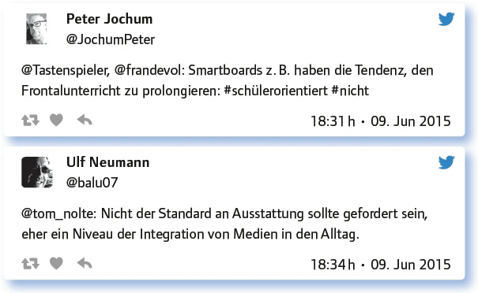
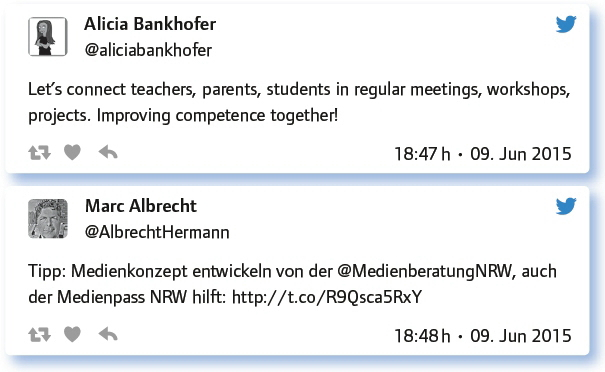

von Monika Heusinger
Lernen in einer digital geprägten Gesellschaft erfordert Medienkompetenz. Im Rahmen der Schulentwicklung ist es daher sinnvoll, ein Medienkonzept zu entwickeln als Basis für eine inhaltliche und methodische Gestaltung der Medienarbeit.
Zunächst wurde das Thema eingegrenzt.
Wovon reden wir eigentlich? Was gehört in ein schulisches Medienkonzept hinein, was nicht?
Wir reden von der Didaktik und den Zielen, dann von Geräten und dann von der Umsetzung.
Die Koordinierung der Medienarbeit und des Aufbaus von Medienkompetenzen innerhalb einer Schule / eines Schulhauses.
Ein Medienkonzept enthält Aussagen zu Zielen, zur Unterrichtsentwicklung, zur Ausstattungsplanung, zum Qualifizierungsplan und zur Evaluation.
Technische Rahmenbedingung, Eltern-Schüler-Lehrer-FoBis, nachaltiger Einsatz im Unterricht in allen Fächern. Verbindlich!
Das Konzept soll möglichst konkret (Handlungsempfehlungen) sein und auf die Schule passen.
Da gehört vor allem rein, den Medienbruch zwischen häuslichem und schulischem Lernen zu vermeiden.
Im Konzept geht es auch um Ausstattung und Erfordernisse, damit es „gelebt“ werden kann.
Welche Rolle spielen Medienerziehung und Medienpädagogik in deiner Schule heute?
Hier stellten die Teilgeber die hohe Bedeutung eines Medienkonzeptes heraus und nannten als Beispiele das Medienkonzept ihrer Schule.
Welche positiven Aspekte des Einsatzes traditioneller und digitaler Medien kannst du nennen? Können sie ins Medienkonzept einfließen?
Hier wurden die positiven Einsatzmöglichkeiten digitaler Medien betont. Aber es wurde auch herausgestellt, dass die analogen Medien ihre Berechtigung haben und es auf eine gute Mischung ankommt.
Es gibt kein Lernen ohne Medien – egal ob analog oder digital!
Die Abwechslung und der gute Mix machen es aus.
Pro digitale Medien: Vereinfachung von Vernetzung und Zusammenarbeit. Abholen der Schüler in ihrer Medienwirklichkeit.
Der Einsatz von neuen Medien ermöglicht Lernen (auch in Gruppen) zeit- und ortsunabhängig.
Digitale Medien motivieren, ermöglichen Binnendifferenzierung und höhere SuS-Aktivität.
Hab mich dazu mal wieder ausgetobt heute: http://t.co/kSW6lNKYHw
Wofür braucht ihr in Sachen Medien dringend neue Ansätze? Wo muss euer Medienkonzept weiterentwickelt werden?
Es wurde hervorgehoben, dass es besonders wichtig ist, die Ansätze ständig auf Aktualität zu prüfen. Außerdem stellt besonders die Nutzung eigener Geräte die Schulen anscheinend vor besondere Herausforderungen.
Schulische Medienkonzepte sollten grundsätzlich immer wieder auf die Aktualität überprüft werden.
Wir haben Bedarf im Bereich ständig wechselnder sozialer Netzwerke sowie in der konkreten Umsetzung von BYOD für die Arbeit.
Die Medien müssten sich auf die Unterrichtskultur auswirken. Nicht nur Altes durch Neues (Digitales) ersetzen.
Dringend notwendig sind Ansätze für die Integration von Medien in die unterschiedlichsten Fächer.
Wie Smartphones, Internet und Social Media eingesetzt werden können – Positives betonen!
Neue Regeln für die Nutzung eigener Geräte, BYOD – auch in Freistunden etc. – müssen bei uns her.
Antworte auf 3 Tweets unterschiedlicher Teilgeberinnen a) zustimmend, b) kritisch, c) provozierend!

Projektplanung: Kannst du 5 Schritte für die Weiterentwicklung eures Medienkonzepts nennen? Wer kann/muss wie dran beteiligt werden?
Hier wurden unterschiedliche Punkte genannt.
Bestandsaufnahme, Curriculumentwicklung, Ausstattungsentwicklung, Qualifizierung im demokratischen, ganzheitlichen Prozess.
Wir haben da was vom Kultusministerium: http://t.co/bDcdPhEtmQ
Beteiligt werden müssen Lehrer, Schüler und Eltern.
Find ich ganz gelungen, nicht nur fürs Ländle: https://t.co/APyqQlTX9b
Martin Lindner, „10 häufig gestellte Fragen zum digital unterstützten Lernen an den Schulen“: https://t.co/MToLrU7JfP
Vision: Wie könnte ein perfektes Medienkonzept einer Schule im Jahr 2025 aussehen?
Hier nannten die Teilgeber verschiedene Aspekte:
Welche Anregungen, Fragen hast du sonst noch zum Thema „Schulische Medienkonzepte“?
Zum Abschluss noch zwei Stellungnahmen:

Bei der Konzeption des Medienkonzeptes sollten alle in der Schule Beteiligten mitarbeiten können. Ein regionaler oder nationaler Medienentwicklungsplan kann als Orientierungsrahmen dienen. Das Konzept muss jedoch an die Lernumgebung und Struktur der jeweiligen Schule angepasst werden. Damit Medienkompetenz effektiv gefördert wird, sind didaktische, methodische sowie technische Aspekte zu berücksichtigen. Wünschenswert sind konkrete Handlungsempfehlungen bei einer gleichzeitig offenen Konzeption, damit auf aktuelle Entwicklungen angemessen reagiert werden kann. Die Verbindlichkeit des Konzeptes stellt die gemeinsame Basis für eine mediengestützte Gestaltung der Lehr-Lern-Prozesse dar.
Weitere Informationen zum Thema:
Bildungsserver RLP, Medienkonzepte: http://medienkompetenz.bildung-rp.de/materialien/medienkonzepte.html
Medienberatung NRW, Medienkonzept: www.medienberatung.nrw.de/Medienberatung/Medien-und-Schule/Medienkonzept/
Link zum vollständigen Protokoll: